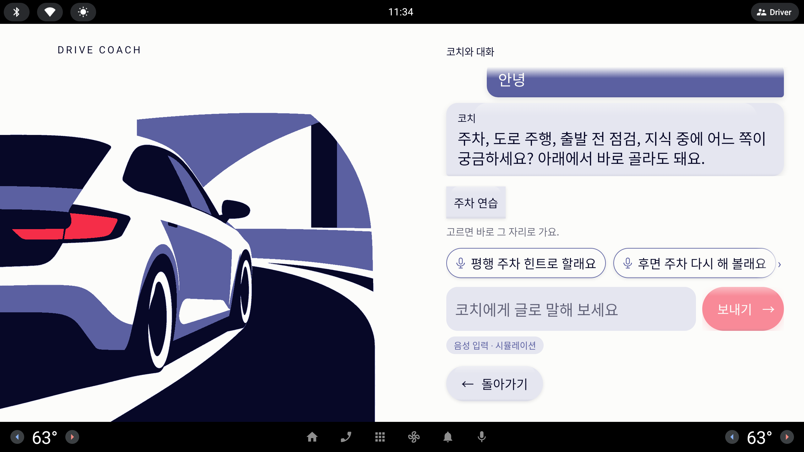
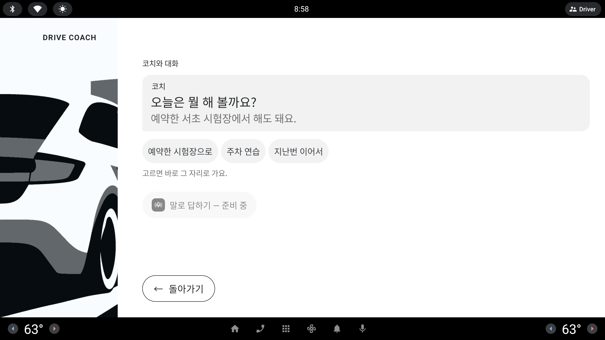

사내 에뮬레이터는 화면 키보드가 뜨지 않아 코치 시트의 입력 칸에 한국어를 칠 수 없다. 그래서 운전자가 할 법한 문장을 카드로 미리 써 두고, 누르면 그 문장이 운전자의 말로 보내져 AI(사내 Copilot · 사외 키워드 규칙)가 답한다. 음성 인식 자리를 대신하는 시뮬레이션이므로 배지 `음성 입력 · 시뮬레이션` 을 유지한다. 카드를 시트 안 어디에 어떤 모양으로 둘지 세 가지(A · B · C)를, 각각 첫 화면과 코치가 되물은 뒤 두 상태로 그렸다.
사내 검증 #5 요청 · 사용자 결정 (10/6) — 말 카드
사내 에뮬은 화면 키보드가 뜨지 않아 한국어 입력이 불가. 코치 시트에 미리 쓴 한국어 문장 카드를 두고, 누르면 그 문장이 운전자 말로 보내져 AI 대화로 간다(STT 자리를 대신하는 시뮬레이션이므로 "음성 입력 · 시뮬레이션" 표시 유지). 카드는 의도별로 섞어 여러 갈래로 흐르게(감정 · 과제 · 상황 · 되묻기 · 프로필), 대화 단계에 따라 카드가 바뀐다(첫 화면 = 감정·인사 위주, AI 가 되물으면 과제·상황 카드). 정차 중만, 큰 터치 타깃, 카드 줄은 가로 스크롤 한 줄.
아래 그림은 모두 실제의 1/3 — 실제 화면은 약 3배. 오른쪽 열(실제 약 1075 dp 폭, 1/3 358px)만 잘라 두 상태를 나란히 놓았다. 왼쪽 일러스트는 그대로라 생략
InkPaperPeriwinkleLavenderSignal· 세 시안이 같은 데이터: 같은 코치 말 · 같은 칩 · 같은 카드 아홉 장 · 예약 있음
카드 = 운전자의 말카드는 칩(누르면 바로 그 화면으로 가는 버튼)과 다르다. 누르면 그 문장이 대화에 운전자 말풍선으로 올라가고, AI 가 문장 + 의도 하나로 답한다. 의도가 `되물음` 이면 시트가 남고 카드가 다음 단계로 바뀐다.
카드 모양 · 공통Paper 면 + Periwinkle 1.5 dp 테두리 + 질감 그림자, 앞에 작은 마이크(B 는 폭 때문에 생략). Lavender 사각 칩과 한눈에 갈린다. 높이 96 dp(1/3 32px) · 글자 40 dp(13px) · 한 줄 · 숫자 없음.
단계첫 화면(운전자 말이 아직 없음) = 감정·인사·되묻기·프로필 넷. 되물은 뒤 = 과제·상황 다섯. 예약이 없으면 예약·모의시험 카드, 지난 기록이 없으면 `지난번 이어서요` 를 뺀다(의도 목록과 같은 규칙).
정차 중만코치 시트는 홈(정차 화면)의 보조 시트라 속도 > 5 km/h 면 잠금 화면으로 덮인다 — 카드도 함께 사라진다(절대 규칙 10). 답을 기다리는 동안은 카드를 흐리게, 누를 수 없게.
빨간 점선 = 첫 화면에서 누른 카드(오른쪽 그림에서 운전자 말풍선이 된다)· 오른쪽 끝 흐림 / 아래 흐림 = 더 있음(스크롤)
지금 · 입력 켬 (lesson-setup-coach-text.png)

지금 · 입력 끔 (lesson-setup-coach-sheet.png)

지금
입력 칸 아니면 칩 셋
관리자 "시뮬레이션 음성 입력" 을 켜면 입력 칸 + `보내기 →` + 배지가 생기고, 끄면 칩 셋 + 흐린 `말로 답하기 — 준비 중` 만 있다. 위 캡처는 사외에서 영어 키보드로 "안녕" 을 보낸 뒤 코치가 되물은 상태.
사내에서 막히는 것
사내 에뮬은 화면 키보드가 뜨지 않는다 — 입력 칸을 눌러도 아무것도 칠 수 없어 AI 대화를 시연할 길이 없다
칩은 AI 를 거치지 않고 바로 화면을 연다 — "AI 와 대화한다" 는 장면이 영상에 남지 않는다
입력 끔 화면의 흐린 마이크는 "준비 중" 이라 누를 것이 칩 셋뿐이다
지금 오른쪽 열 실측 (1/3 px)
눈썹
위에서 약 29
대화(말풍선)
약 46 – 205 · 위로 넘치면 잘림
칩 · 안내
약 216 – 249 · 264
입력 칸 · 보내기
약 279 – 326 (높이 약 47)
배지
약 332 – 350
`← 돌아가기`
약 364 – 400 (고정)
읽는 법 · 세 시안 모두 눈썹 · `← 돌아가기` 자리는 그대로, 대화 영역을 조금 줄여 카드 자리를 만든다. 차이는 카드가 가로 한 줄(A) · 두 칸 격자(B) · 세로 말풍선(C)인 것.
첫 화면
코치와 이야기
코치
오늘은 뭘 해 볼까요? 예약한 서초 시험장에서 해도 돼요.
예약한 시험장으로주차 연습지난번 이어서
고르면 바로 그 자리로 가요.
누르면 코치에게 말해요
오랜만이라 무서워요어제 긁을 뻔했어요뭐부터 하면 좋을까요?아이 등하원 때문에 배워요
›
코치에게 글로 말해 보세요
보내기 →
음성 입력 · 시뮬레이션
← 돌아가기
카드 넷 중 둘 반이 보이고 오른쪽 끝이 흐려 "옆으로 더 있다" 가 읽힌다.
코치가 되물은 뒤
코치와 이야기
코치
오늘은 뭘 해 볼까요? 예약한 서초 시험장에서 해도 돼요.
오랜만이라 무서워요
코치
괜찮아요, 천천히 같이 해요. 주차부터 할까요, 시험장에서 연습할까요?
주차 연습예약한 시험장으로
누르면 코치에게 말해요
평행 주차 힌트로 할래요후면 주차 다시 해 볼래요모의시험 볼래요예약한 시험장 연습할래요지난번 이어서요
›
코치에게 글로 말해 보세요
보내기 →
음성 입력 · 시뮬레이션
← 돌아가기
카드 다섯 중 둘만 보인다(문장이 길다). 나머지 셋은 옆으로 밀어야 보인다.
시안 A
입력 칸 위 가로 한 줄 (Strip)
칩 · 안내 아래, 입력 칸 바로 위에 말 카드 한 줄. 가로로 밀어 넘긴다. 입력 칸 · `보내기` · 배지는 지금 자리 그대로 남아 영어 키보드가 있는 사외 빌드에서는 계속 글을 칠 수 있다.
터치 · 보이는 양
카드 높이 96 dp · 폭은 문장 길이(약 450 – 520 dp). 카드 사이 24 dp
한 번에 둘 ~ 둘 반. 첫 화면 넷 중 뒤 둘, 되물은 뒤 다섯 중 뒤 셋은 밀어야 보인다
스크롤 힌트 — 오른쪽 끝 흐림 + `›`. 끝까지 밀면 왼쪽에 흐림이 생긴다
누르면
카드 문장이 그대로 운전자 말풍선(Periwinkle)으로 올라가고, 입력 칸에 친 글을 보낸 것과 같은 길(`sendCoachText`)로 AI 에 간다. 답을 기다리는 동안 카드 줄 흐림
답 의도가 `되물음` 이면 카드 줄이 다음 단계로 바뀌고 처음 위치로 돌아간다. 아니면 시트가 닫히고 그 화면으로
Fake 키워드 규칙도 같은 문장을 받으므로 사외·오프라인에서 그대로 동작(아래 표)
주의점
사용자 결정("가로 스크롤 한 줄")과 그대로 맞는다. 다만 사내 에뮬에서는 입력 칸이 쓸모없이 자리만 차지한다(키보드 없음) — 칸이 있는데 칠 수 없어 보인다
가로 밀기는 차 화면에서 손가락이 미끄러지기 쉽다. 문장이 길어 한 장씩 보이는 양이 적다
칩(바로 이동)과 카드(말하기)가 위아래로 붙어 두 종류 버튼이 섞여 보일 수 있다 — 테두리·마이크로 구분
구현LazyRow 한 줄 + 단계별 카드 목록(상태기계에 "운전자 말 있음 / 되물음" 두 값) · 입력 칸 그대로 · 난이도 하
첫 화면 · 카드 모드
코치와 이야기
코치
오늘은 뭘 해 볼까요? 예약한 서초 시험장에서 해도 돼요.
예약한 시험장으로주차 연습지난번 이어서
고르면 바로 그 자리로 가요.
누르면 코치에게 말해요음성 입력 · 시뮬레이션
오랜만이라 무서워요어제 긁을 뻔했어요뭐부터 하면 좋을까요?아이 등하원 때문에 배워요
← 돌아가기
넷이 한눈에 다 보인다. 입력 칸 자리를 격자가 쓴다.
코치가 되물은 뒤 · 카드 모드
코치와 이야기
코치
오늘은 뭘 해 볼까요? 예약한 서초 시험장에서 해도 돼요.
오랜만이라 무서워요
코치
괜찮아요, 천천히 같이 해요. 주차부터 할까요, 시험장에서 연습할까요?
주차 연습예약한 시험장으로
누르면 코치에게 말해요음성 입력 · 시뮬레이션
평행 주차 힌트로 할래요후면 주차 다시 해 볼래요모의시험 볼래요예약한 시험장 연습할래요지난번 이어서요
← 돌아가기
다섯이 세 줄로 다 보인다(빈 칸 하나). 스크롤 없음.
시안 B
입력 칸 대신 두 칸 격자 (Grid)
관리자 입력 방식이 "카드" 일 때 입력 칸 · `보내기` 자리에 두 칸 격자를 둔다. 카드 폭이 열의 반(약 525 dp)으로 같아 표처럼 정돈된다. 배지는 카드 머리 줄 오른쪽 끝으로 옮겨 카드와 붙인다.
터치 · 보이는 양
카드 96 dp × 약 525 dp — 셋 중 가장 넓은 터치 면. 사이 24 dp
첫 화면 넷 · 되물은 뒤 다섯 모두 한눈에 — 스크롤 힌트가 필요 없다
되물은 뒤는 세 줄(약 360 dp)로 늘어 `← 돌아가기` 위 여백이 약 140 dp 로 준다. 여섯 장이 넘으면 넘칠 수 있어 단계마다 최대 여섯
누르면
A 와 같다 — 문장이 운전자 말풍선으로, 같은 `sendCoachText` 길. 기다리는 동안 격자 흐림
Fake 키워드 규칙 그대로
주의점
"가로 스크롤 한 줄" 이라는 사용자 결정과 다르다(한 줄이 아니라 격자)
폭이 반이라 마이크를 뺐고, 가장 긴 문장(`예약한 시험장 연습할래요`)이 칸을 거의 꽉 채운다 — 문구를 더 길게 못 쓴다
입력 칸이 사라지므로 "카드 모드 / 글 모드" 관리자 전환이 하나 더 생긴다(사외 키보드 빌드는 글 모드)
구현고정 2열 격자 + 관리자 입력 방식 세 값(끔 · 글 · 카드) · 난이도 하~중
첫 화면
코치와 이야기
음성 입력 · 시뮬레이션
코치
오늘은 뭘 해 볼까요? 예약한 서초 시험장에서 해도 돼요.
예약한 시험장으로주차 연습지난번 이어서
이렇게 말해 볼 수 있어요 — 누르면 보내져요
오랜만이라 무서워요어제 긁을 뻔했어요뭐부터 하면 좋을까요?아이 등하원 때문에 배워요
← 돌아가기
넷이 오른쪽 정렬로 세로로 다 보인다 — 보내기 전의 운전자 말풍선 모양.
코치가 되물은 뒤
코치와 이야기
음성 입력 · 시뮬레이션
코치
오늘은 뭘 해 볼까요? 예약한 서초 시험장에서 해도 돼요.
오랜만이라 무서워요
코치
괜찮아요, 천천히 같이 해요. 주차부터 할까요, 시험장에서 연습할까요?
주차 연습예약한 시험장으로
평행 주차 힌트로 할래요후면 주차 다시 해 볼래요모의시험 볼래요예약한 시험장 연습할래요지난번 이어서요
← 돌아가기
다섯 중 넷이 보이고 다섯째는 아래 흐림 속 — 세로로 밀어야 한다.
시안 C
보낼 말풍선 (Bubbles)
카드를 "아직 보내지 않은 운전자 말풍선" 으로 그린다 — 오른쪽 정렬, Periwinkle 테두리만, 오른쪽 아래 모서리가 각진 말풍선 꼬리. 누르면 같은 자리에서 Periwinkle 로 채워지며 대화 위로 올라간다. 입력 칸은 없고 배지는 눈썹 줄 오른쪽 끝.
터치 · 보이는 양
카드 96 dp × 문장 길이(약 450 – 520 dp). 세로 사이 15 dp
첫 화면 넷은 다 보이고, 되물은 뒤 다섯은 넷 + 아래 흐림(세로 스크롤)
스크롤 힌트 — 아래쪽 흐림. 세로 밀기는 가로 밀기보다 차 화면에서 익숙하다
누르면
"이 말을 내가 한다" 가 모양으로 가장 잘 읽힌다 — 누른 말풍선이 채워진 운전자 말풍선(대화 속 `오랜만이라 무서워요`)과 같은 꼴
같은 `sendCoachText` 길 · Fake 키워드 규칙 그대로
주의점
보낸 말(채움)과 보낼 말(테두리)이 같은 오른쪽 열에 섞여 처음 보는 사람은 "이미 말했나?" 하고 헷갈릴 수 있다
카드가 세로로 쌓여 대화 영역이 가장 많이 줄어든다(코치 말이 길면 위로 잘림). 다섯 장이 넘으면 스크롤 필수
오른쪽 정렬이라 카드 왼쪽 끝이 들쭉날쭉 — 운전석에서 가장 먼 오른쪽 끝에 손이 가야 한다
사외 키보드 빌드에서 입력 칸을 다시 넣을 자리가 마땅치 않다
구현세로 목록 + 말풍선 모양 · 누름 → 채움 애니메이션(선택) · 난이도 중
카드 아홉 장 → 의도 (세 시안 공통)
카드는 문장 그대로 보내므로 AI(사내 Copilot)는 다른 글처럼 판단한다. 사외·오프라인은 키워드 규칙(`IntentRules`, 지금 "주차" · "평행" · "시험" · "예약" · "이어서" · "프로필" · 과제 제목)이 받는다. 아래 "규칙" 칸은 지금 키워드 기준의 어림 — 실제 매칭은 구현 때 단위 테스트로 고정한다. 의도 이름은 `docs/design/12_home_coach_dialog.md` 의 `CoachIntent`.
단계
카드
갈래
지금 키워드 규칙이 잡는 것
바라는 의도 · 그다음
첫 화면
오랜만이라 무서워요
감정
키워드 없음 → 되물음
`AskMore` — 달래는 한 문장 + 과제·상황 카드로
첫 화면
어제 긁을 뻔했어요
감정
키워드 없음 → 되물음
`AskMore`(주차 쪽으로 되묻기) — "긁" 을 주차 키워드로 보태면 `OpenSheet(주차)` 도 가능
첫 화면
뭐부터 하면 좋을까요?
되묻기
키워드 없음 → 되물음
`AskMore` 또는 추천 과제 `PinTask` — 홈 제안을 한 번 더 설명
첫 화면
아이 등하원 때문에 배워요
프로필
"프로필" 이 아니라 못 잡음 → 되물음
`OpenProfile` — 규칙에 "등하원" · "배워요" 보강 필요
되물은 뒤
평행 주차 힌트로 할래요
과제
"평행" · "주차"
`PinTask(평행 주차, 힌트)` — "힌트" 를 모드로 읽는지 확인
되물은 뒤
후면 주차 다시 해 볼래요
과제
"주차"(제목 `후면 직각 주차` 와 글자가 달라 제목 매칭은 안 됨)
`PinTask(후면 직각 주차)` — "후면" 키워드 보강 필요, 지금은 `OpenSheet(주차)`
되물은 뒤
모의시험 볼래요
상황
"시험"
`Booking(모의시험)` — 예약이 없으면 카드 자체를 빼거나 `OpenSheet` 평가 모드
되물은 뒤
예약한 시험장 연습할래요
상황
"예약" · "시험"
`Booking(코스 연습)` 또는 `ShowBooking` — 예약 없으면 카드 빠짐
되물은 뒤
지난번 이어서요
상황
"이어서"
`ContinueLast` — 지난 기록이 없으면 카드 빠짐
한눈에 비교
터치 면은 실제 dp. "보이는 양" = 스크롤 없이 보이는 카드 수(첫 화면 / 되물은 뒤).
시안
카드 터치 면
보이는 양
스크롤
입력 칸
"한 줄 가로 스크롤" 결정과
대화 영역 줄어듦
난이도
A 가로 한 줄
96 × 약 450 – 520
둘 반 / 둘
가로 · 흐림 + `›`
그대로(사외 키보드 OK)
같음
조금
하
B 두 칸 격자
96 × 약 525 (가장 넓음)
넷 / 다섯 (전부)
없음
카드 모드에선 없음
다름(격자)
조금
하~중
C 보낼 말풍선
96 × 약 450 – 520
넷 / 넷
세로 · 아래 흐림
자리 없음
다름(세로)
가장 많이
중
추천
시안 A · 입력 칸 위 가로 한 줄 — 단, 사내(키보드 없음)에서는 입력 칸을 접는다
사용자가 정한 "큰 카드 · 가로 스크롤 한 줄" 과 그대로 맞고, 입력 칸·배지·칩 자리를 바꾸지 않아 지금 시트에 한 줄만 끼우면 된다. 같은 `sendCoachText` 길로 가므로 Copilot · Fake 규칙 어느 쪽에서도 대화가 이어진다.
Claude(상태기계): 단계별 카드 목록(첫 화면 넷 · 되물은 뒤 다섯, 예약·지난 기록 없으면 해당 카드 빼기) · 카드 누름 = `sendCoachText(카드 문장)` · 기다리는 동안 카드 잠금 · `IntentRules` 에 "등하원" · "후면" · "힌트" 보강 + 카드 아홉 장 매칭 단위 테스트
Codex(화면): 칩 · 안내 아래 LazyRow 한 줄(카드 96 dp · Periwinkle 테두리 · 앞 마이크 · 오른쪽 흐림 + `›`) · 배지는 입력 칸 아래 그대로
사내 에뮬처럼 키보드가 없을 때 입력 칸이 빈자리로 남는 문제는 관리자 입력 방식에 "카드만" 값을 두어 칸을 접는 것으로 — 그때는 B 처럼 카드가 그 자리를 써도 된다(B 는 이 경우의 대안으로 남김)